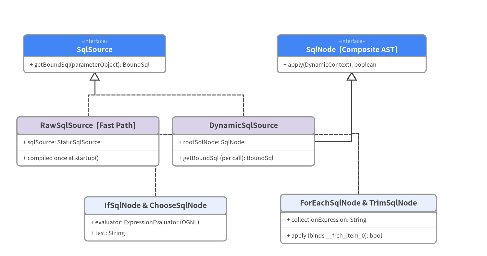
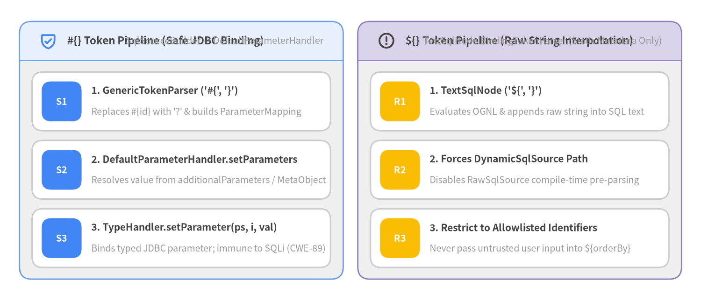

5. 動的 SQL AST と OGNL 評価
MyBatis 3 の動的 SQL エンジン (org.apache.ibatis.scripting.*, 全 25 ファイル) は、Interpreter パターンと Composite パターンを組み合わせることで、XML タグ（<if>, <choose>, <when>, <otherwise>, <where>, <set>, <trim>, <foreach>, <bind>）を実行可能な SqlNode 抽象構文木（AST）へとコンパイルします。

Source Code
from drawlib.canvas import save, setup
from drawlib.diagrams.class_diagram import ClassDiagram, ClassNode
from drawlib.fonts import FontMonoSpace, FontRoboto
from drawlib.styles import Colors, Styles
setup(width=144, height=76, dpi=150)
cd = ClassDiagram(
width=144.0,
height=76.0,
node_style=Styles.Neutral.patch(
shape_fill_color=Colors.White,
shape_line_color=Colors.Gray6,
text_color=Colors.Dark,
text_font=FontMonoSpace.ROBOTO_MONO_REGULAR,
text_size=9.2,
),
header_style=Styles.PrimaryNeutral.patch(
shape_line_color=Colors.Gray6,
text_color=Colors.Dark,
text_font=FontRoboto.ROBOTO_BOLD,
text_size=9.8,
),
edge_style=Styles.Dark.patch(line_width=1.4),
edge_text_style=Styles.DarkBold.patch(text_font=FontRoboto.ROBOTO_BOLD, text_size=9.2),
)
hero_hdr = Styles.PrimaryFlat.patch(text_color=Colors.White, text_font=FontRoboto.ROBOTO_BOLD, text_size=9.8)
sec_hdr = Styles.SecondaryNeutral.patch(shape_line_color=Colors.Gray6, text_color=Colors.Dark, text_font=FontRoboto.ROBOTO_BOLD, text_size=9.8)
n_src = cd.add(
ClassNode("SqlSource", stereotype="interface", width=42.0, header_style=hero_hdr)
.add_method("getBoundSql", "parameterObject", "BoundSql"),
xy=(28.0, 60.0),
)
n_node = cd.add(
ClassNode("SqlNode [Composite AST]", stereotype="interface", width=44.0, header_style=hero_hdr)
.add_method("apply", "DynamicContext", "boolean"),
xy=(104.0, 60.0),
)
n_raw = cd.add(
ClassNode("RawSqlSource [Fast Path]", width=42.0, header_style=sec_hdr)
.add_attribute("sqlSource", "StaticSqlSource")
.add_method("compiled once at startup", "", ""),
xy=(26.0, 34.0),
)
n_dyn = cd.add(
ClassNode("DynamicSqlSource", width=42.0, header_style=sec_hdr)
.add_attribute("rootSqlNode", "SqlNode")
.add_method("getBoundSql (per call)", "param", "BoundSql"),
xy=(72.0, 34.0),
)
n_if = cd.add(
ClassNode("IfSqlNode & ChooseSqlNode", width=42.0)
.add_attribute("evaluator", "ExpressionEvaluator (OGNL)")
.add_attribute("test", "String"),
xy=(46.0, 11.0),
)
n_for = cd.add(
ClassNode("ForEachSqlNode & TrimSqlNode", width=46.0)
.add_attribute("collectionExpression", "String")
.add_method("apply (binds __frch_item_0)", "ctx", "bool"),
xy=(106.0, 11.0),
)
cd.connect(n_raw, n_src, "realization", start_side="top", end_side="bottom")
cd.connect(n_dyn, n_src, "realization", start_side="top", end_side="bottom")
cd.connect(n_dyn, n_node, "association", directed=True, start_side="right", end_side="bottom")
cd.connect(n_if, n_node, "realization", start_side="top", end_side="bottom")
cd.connect(n_for, n_node, "realization", start_side="top", end_side="bottom")
cd.draw(xy=(0.0, 0.0))
save()
RawSqlSource（起動時一括コンパイル高速パス）と DynamicSqlSource（実行時 AST 評価）
XMLScriptBuilder.parseScriptNode() (src/main/java/org/apache/ibatis/scripting/xmltags/XMLScriptBuilder.java:53-68) は、マッパー内の SQL 定義を解析して2種類の SqlSource のいずれかを生成します。
- 静的 SQL 高速パス (
RawSqlSource->StaticSqlSource):<if>や<foreach>等の動的 XML タグを含まず、かつ${}文字列置換も含まない場合（#{}のみの場合）、RawSqlSourceが選択されます。RawSqlSourceはアプリケーション起動時に1度だけSqlSourceBuilder.parse()を実行し、#{id,jdbcType=BIGINT}を JDBC?プレースホルダへ置換した上で不変のList<ParameterMapping>を構築します。実行時はトークン解析コストがゼロになります。
- 動的 SQL 実行時パス (
DynamicSqlSource):- 動的 XML タグまたは
${}を含む場合はDynamicSqlSourceが生成されます。 - クエリ実行ごとに
DynamicContextを生成してrootSqlNode.apply(context)を走査し（<if test="...">の条件式はOgnlCacheにキャッシュされた OGNL 構文木で評価）、組み立てられた SQL 文字列に対してSqlSourceBuilder.parse()を実行してBoundSqlを生成します。
- 動的 XML タグまたは
セキュリティとパフォーマンスの決定的な違い：#{} と ${}

Source Code
from drawlib.canvas import save, setup
from drawlib.icons import phosphor
from drawlib.smartarts import CardList, Panel
from drawlib.styles import Colors, Styles
setup(width=144, height=62, dpi=150)
white_card = Styles.Neutral.patch(shape_fill_color=Colors.White)
left_panel = Panel(
"#{} Token Pipeline (Safe JDBC Binding)",
"SqlSourceBuilder -> DefaultParameterHandler",
style=Styles.Neutral,
header_style=Styles.PrimaryNeutral.patch(shape_line_width=1.2),
text_style=Styles.DarkBold.patch(text_size=10.8),
description_style=Styles.Muted.patch(text_size=9.5),
icon=phosphor.shield_check,
icon_style=Styles.PrimaryBold,
header_variant="filled",
header_height=8.0,
)
left_panel.draw((4.0, 4.5), width=66.5, height=53.0, align="bottom_left")
l_xy, l_w, l_h = left_panel.get_content_box((4.0, 4.5), width=66.5, height=53.0, padding=(2.6, 2.4), align="bottom_left")
safe_cards = CardList(
style=white_card,
text_style=Styles.DarkBold.patch(text_size=10.0),
description_style=Styles.Muted.patch(text_size=9.4),
badge_shape="rounded_rect",
badge_style=Styles.PrimaryFlat,
badge_text_style=Styles.WhiteBold.patch(text_size=9.5),
direction="vertical",
spacing=2.0,
)
safe_cards.add(
"1. GenericTokenParser ('#{', '}')",
"Replaces #{id} with '?' & builds ParameterMapping",
badge_text="S1",
)
safe_cards.add(
"2. DefaultParameterHandler.setParameters",
"Resolves value from additionalParameters / MetaObject",
badge_text="S2",
)
safe_cards.add(
"3. TypeHandler.setParameter(ps, i, val)",
"Binds typed JDBC parameter; immune to SQLi (CWE-89)",
badge_text="S3",
)
safe_cards.draw(l_xy, width=l_w, height=l_h, align="bottom_left")
right_panel = Panel(
"${} Token Pipeline (Raw String Interpolation)",
"TextSqlNode.BindingTokenParser (Static Metadata Only)",
style=Styles.Neutral,
header_style=Styles.SecondaryNeutral.patch(shape_line_width=1.2),
text_style=Styles.DarkBold.patch(text_size=10.8),
description_style=Styles.Muted.patch(text_size=9.5),
icon=phosphor.warning_circle,
icon_style=Styles.WarningBold,
header_variant="filled",
header_height=8.0,
)
right_panel.draw((73.5, 4.5), width=66.5, height=53.0, align="bottom_left")
r_xy, r_w, r_h = right_panel.get_content_box((73.5, 4.5), width=66.5, height=53.0, padding=(2.6, 2.4), align="bottom_left")
raw_cards = CardList(
style=white_card,
text_style=Styles.DarkBold.patch(text_size=10.0),
description_style=Styles.Muted.patch(text_size=9.4),
badge_shape="rounded_rect",
badge_style=Styles.WarningFlat,
badge_text_style=Styles.WhiteBold.patch(text_size=9.5),
direction="vertical",
spacing=2.0,
)
raw_cards.add(
"1. TextSqlNode ('${', '}')",
"Evaluates OGNL & appends raw string into SQL text",
badge_text="R1",
)
raw_cards.add(
"2. Forces DynamicSqlSource Path",
"Disables RawSqlSource compile-time pre-parsing",
badge_text="R2",
)
raw_cards.add(
"3. Restrict to Allowlisted Identifiers",
"Never pass untrusted user input into ${orderBy}",
badge_text="R3",
)
raw_cards.draw(r_xy, width=r_w, height=r_h, align="bottom_left")
save()
DefaultParameterHandler.setParameters(PreparedStatement ps) の内部解決順序
src/main/java/org/apache/ibatis/scripting/defaults/DefaultParameterHandler.java:89-160（コードベース内で認知的複雑度が最大の cognitive=129 メソッド）は、boundSql.getParameterMappings() を走査して以下の優先順位で各パラメータ値を解決します。
boundSql.hasAdditionalParameter(propertyName):<foreach>が自動生成する合成パラメータ（__frch_item_0,__frch_item_1）や<bind>変数を最優先で取得。parameterObject == null:nullとしてTypeHandler（JdbcType指定付き）でバインド。typeHandlerRegistry.hasTypeHandler(parameterObject.getClass()):Long・String・UUID等の単一プリミティブ／値型はそのままバインド。MetaObject.getValue(propertyName): ドメインオブジェクト（JavaBean / Record）やParamMapからネストプロパティを解決してバインド。